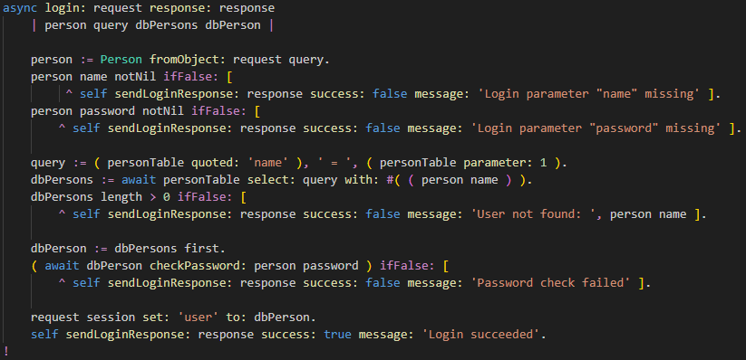

In the file
src/ShopServer.st , scroll down to the method
async login: request response: response :

The request URL should be in the format:
localhost:3000/api/login?name=John&password=secret .
request query returns a ST
Object with properties
name and password set to the specified values.
Person fromObject: then converts the generic object to a Person instance.
Now the can be checked to for completeness with normal method calls
name and
password .
Now we want to check of this person exists in our database.
Variable
query contains the 'WHERE' clause of the select statement, checking by name.
Its passed with a select statement with the person name as a parameter.
(The extra parenteses are needed to resolve the
method call person name first).
Note: Always pass parameters separately this way, to prevent SQL injection attacks.
The query returns a
DbPerson a subclass of
Person with all database fields.
This is necessary because the
Person class is shared with the web client app,
and we don't want to show all database fields on the client side.
Now a check if the person with a matching name was found and if its password matches
with the password that was sent in the login request.
If all went well, the
DbPerson> is stored in the session object property
'user'
and a
LoginReponse indicating success is sent back to the web client.
Passwords stored in the database are hashed with a salt.
Check out the method
DbPerson.checkPassword: to see how checking works.
Handlers for API requests for products and orders first call the method
getRequestUser:response:
to check if a user is present on the session object. If not, the users is not logged in.